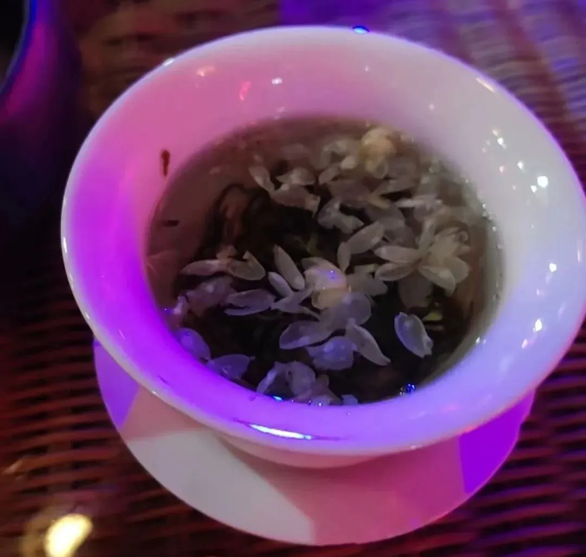
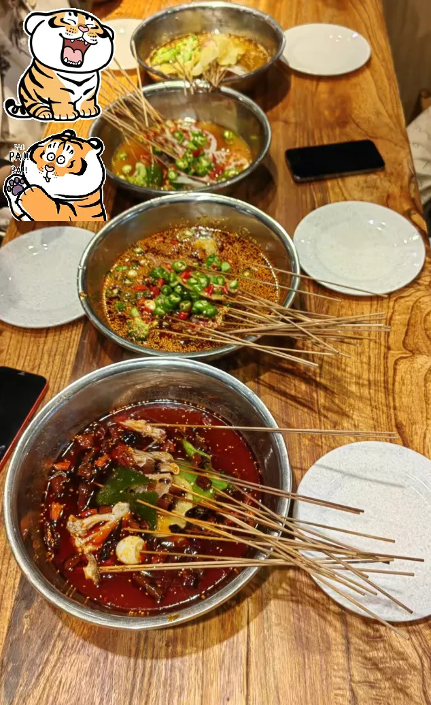
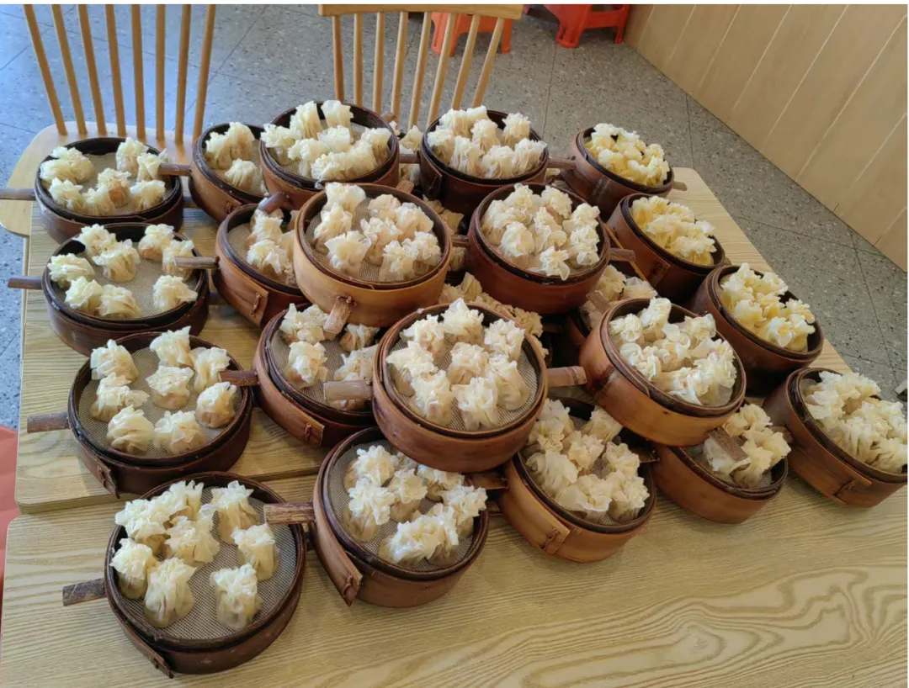
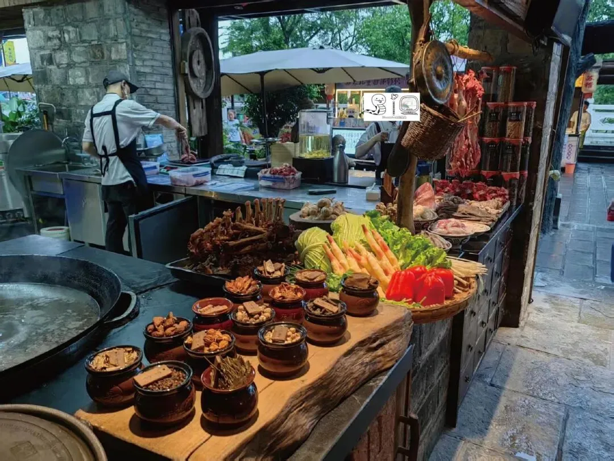
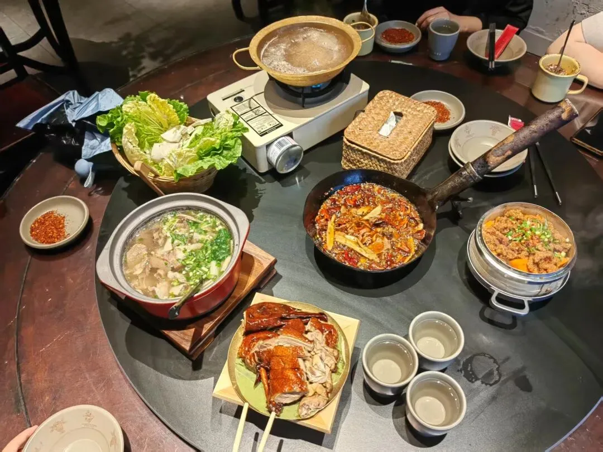
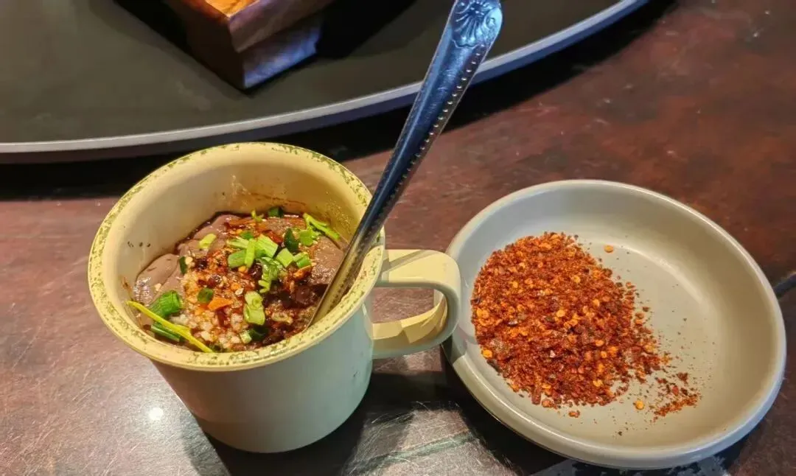

学术猪八戒一直在路上
原文：https://mp.weixin.qq.com/s?__biz=MzAwMzIzOTk5OQ==&mid=2247529614&idx=2&sn=63abb24b7897dbdb2b6cf041cc100592&chksm=9b3c0ddeac4b84c8e3cb39a4d59e4ced8f49dddb359c1bd93bc4fed234b6e76a39b75453a0ac#rd 合集：漫谈胡侃
一、人生是旷野
其实博士毕业有些"产后抑郁"，猛的从读博节奏中撤出来，对未来生活有些无所适从。好不容易毕业免费了，现在最想做的是到处走走，算是替大家自由 。既然步子也迈开了。如果大家恰好在硕博或生活中遇到了困难与挑战，需要心灵鸡汤；又或是有生信课题需要交流，亦或是课题组需要单细胞讲座/教学；又或是各位老师希望和我们联合完成一些课题或项目。那么我都可以在来到大家的城市时，与大家进行交流~大家可以通过邮件联系我：wchcpu2019@163.com，全球可飞，已走完日本、成都两站。我们也欢迎大家随时来生信基地兼职/工作/参观。
。既然步子也迈开了。如果大家恰好在硕博或生活中遇到了困难与挑战，需要心灵鸡汤；又或是有生信课题需要交流，亦或是课题组需要单细胞讲座/教学；又或是各位老师希望和我们联合完成一些课题或项目。那么我都可以在来到大家的城市时，与大家进行交流~大家可以通过邮件联系我：wchcpu2019@163.com，全球可飞，已走完日本、成都两站。我们也欢迎大家随时来生信基地兼职/工作/参观。
** **
****二、四川吃的可真多
四川行的最大收获自然是美食，一天吃五顿居然还掉了2kg
** **
盖碗茶喝了

** **
变脸看了
** **
乐山钵钵鸡吃了

** **
烧卖炫起来(店家的库存哈哈，猪八戒也吃不下那么多)

** **
翘脚牛肉那也是必吃榜：



** **冰粉、火锅、炸串、蹄花汤自然是一样没落下，但是光顾着吃了

如何联系我们

 留一个领取资料、免费两周学习版服务器的微信号[Biomamba_zhushou]，方便各位随时交流。同时我们也构建了交流群矩阵，欢迎大家入群讨论。
大家可以阅读完这几篇之后添加给生信入门初学者的小贴士
没有检索，就没有发言权
留一个领取资料、免费两周学习版服务器的微信号[Biomamba_zhushou]，方便各位随时交流。同时我们也构建了交流群矩阵，欢迎大家入群讨论。
大家可以阅读完这几篇之后添加给生信入门初学者的小贴士
没有检索，就没有发言权
已有生信基地联系方式的同学无需重复添加

 您点的每个赞和在看，我都认真当成了喜欢
您点的每个赞和在看，我都认真当成了喜欢